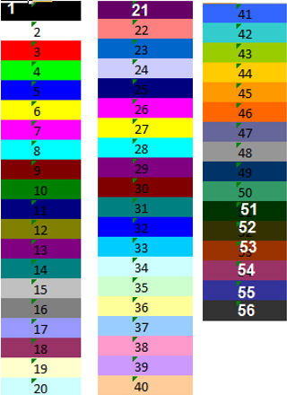

La fonction OpenXml_CreateFont crée une police de caractères qui pourra être utilisée lors de l’appel à la fonction OpenXml_WriteFormat.
int OpenXml_CreateFont ([gras], [taille], [indexcouleur], [nom], [italique], [souligne], [barre])
Paramètres
Gras
1 = oui.
0 = non (par défaut).
Taille
0 = Prendre la hauteur par défaut de la police des cellules (valeur par défaut).
Autre = taille de la police (entre 8 et 72).
IndexCouleur
0 = Couleur des caractères par défaut (noir en général).
Indice d'une couleur (voir le tableau ci-dessous).
Nom
Espace = fonte des cellules par défaut de Excel (Tahoma en général).
Autre = nom de la fonte.
Italique
1 = oui.
0 = non (par défaut).
Souligne
1 = oui.
0 = non (par défaut).
Barre
1 = oui.
0 = non (par défaut).
Retour
La fonction retourne un identifiant qui devra ensuite être utilisé lors de l’appel à la fonction OpenXml_WriteFormat.
Exemples :
1 pol x ; identifiant de la police
pol = OpenXml_CreateFont(1) ; police en gras
pol = OpenXml_CreateFont(1,16) ; police en gras et en taille 16
pol = OpenXml_CreateFont(0,16) ; police sans gras et en taille 16
pol = OpenXml_CreateFont(1,0,24) ; police en gras et en taille par défaut,
; caractères en couleur 24 (bleu ciel)
pol = OpenXml_CreateFont(nom = "Tahoma") ; police Tahoma, taille par défaut
Couleurs (polices et couleurs de fond des cellules)
Il s'agit des couleurs standard d’Excel, allant de 1 à 56.
La couleur 24 est souvent utilisée pour mettre une cellule en relief.

Voir